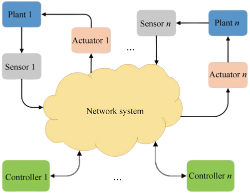

Research
Robust Control Reading List
A course in H-infinity control theory by Bruce Francis
Feedback control theory by Sigurd Skogestas, Ian Postethwaite
Multivariable feedback control by John Doyle, Bruce Francis, and Allen Tannenbaum
Robust and optimal control by Kemin Zhou, John Doyle, Keith Glover
A course in robust control: A convex approach by Geir Dullerad and Fernando Paganini
Dynamics system and control by Munther Dahleh
Theory of robust control by Carsten Scherer
Linear matrix inequalities in system and control theory by Stephen Boyd, Laurent El Ghaoui, Eric Feron, and Venkataramanan Balakrishnan
Networked Control Systems
J. Chen, Q. Mao, D. Zhao, and C. Chen, “Robust stability and stabilizability conditions of time-delay systems against stochastic uncertainties,” IEEE Trans. Automat. Contr., vol. 70(6), pp. 4037-4044, 2025.
|  Networked Control System |
Networked Control Systems (NCS) are control systems where sensors, controllers, and actuators communicate over a shared network instead of direct, dedicated connections. This setup offers flexibility, scalability, and easier maintenance, making NCS popular in applications like industrial automation, robotics, and smart grids.
However, it also introduces challenges such as communication delays, packet loss, bandwidth limitations, and synchronization issues, which can affect the system's stability and performance.
We address these networked uncertainties in a unified framework. |
Phase Theory over Large-Scale Networks
 Complex Electrical Networks |
The small gain theorem, introduced in the 1960s, heralded a long-lasting prosperity of gain-based analysis and synthesis theory, particularly within the H-infinity framework. In contrast, the exploration of a phase-based counterpart began in the 1970s but saw limited development compared to the gain theory for many years.
During this same period, energy-related concepts in engineering and physics, such as passivity and dissipativity, were integrated into control systems studies, leading to the flourishing development of dissipativity theory.
Rather than acting as independent concepts, gain, phase, and dissipativity exhibit intricate yet intrinsic connections. Notably, a recent surge in phase-based research provides researchers with opportunities to reconsider the foundations of control analysis and synthesis,
uncovering new connections among these essential concepts. Our study focuses on the phase properties of large-scale N-port networks, quantifying and extending the notion of passivity, which originated from the same theoretical platform. |
Security and Safety over Cyber-Physical Systems
| Distributed System under Cyber Attacks |
This research investigates how to ensure the security and safety of cyber-physical systems (CPS), which tightly integrate computing, communication, and physical processes. The focus is on developing methods to detect and mitigate cyber-attacks, ensure system resilience, and maintain safe operation despite uncertainties, faults, or malicious interference. By combining control theory, network security, and real-time monitoring, the goal is to build CPS that can operate reliably and safely in adversarial or unpredictable environments, such as smart grids, autonomous vehicles, and industrial automation. |
Machine Learning and Robust Control: Regret Minimization
| Regret-based Robust and Optimal Control |
Regret minimization, originating from online learning and game theory, focuses on the difference between the performance of the chosen strategy and the best possible strategy in hindsight. The goal is to minimize this regret over time. The interplay between regret minimization and robust control becomes evident in scenarios where decisions need to be made in uncertain and dynamic environments. Key points of their interplay include:
1) Focusing on minimizing regret as a robust performance metric, rather than using classical H_infty and H_2 metrics.
2) Designing online robust controllers through online learning algorithms. |
Machine Learning and Robust Control: Limitation of Neural Networks in Control and Safety Verification
| Control and Safety Verification |
Using neural networks (NNs) as controllers introduces significant challenges for safety verification and stability analysis due to their inherent complexity and nonlinearity. While powerful for control tasks, rigorously verifying that an NN controller will keep a system safe (avoiding hazardous states) or
stable across all possible operating conditions is computationally demanding. Methods like quadratic constraints combined with semidefinite programming (SDP) provide frameworks for this analysis by bounding the NN's behavior,
but they often suffer from high computational complexity (especially for large NNs or high-dimensional systems) and can yield overly conservative results, potentially declaring safe states unsafe. Beyond those limits is our task. |
Collaborative Control of Robotic Arms: State Estimation, Imitation Learning and Beyond
| Quanser's QArm: A serial robotic manipulator |
This research focuses on enabling multiple robotic arms to work together effectively through advanced control and learning methods.
It integrates state estimation to accurately track system dynamics, imitation learning to teach robots from human demonstrations or expert behaviors,
and explores beyond-standard approaches such as reinforcement learning, robust control, or multi-agent coordination.
The goal is to develop robust and intelligent control frameworks that allow robotic arms to collaborate safely and efficiently in dynamic and uncertain environments. |
Stability Margins Achievable by PID Control
 Robust Feedback Digraph |
Proportional-Integral-Derivative (PID) control has been the workhorse of control technology for about a century. Yet to this day, designing and tuning PID controllers relies mostly on either tabulated rules (Ziegler-Nichols) or on classical graphical techniques (Bode). Our goal is to take a fresh look on PID control in the context of optimizing stability margins for low-order (first- and second-order) linear time-invariant systems.
Specifically, we seek to derive explicit expressions for gain, phase, and delay margins that are achievable using PID control, and thereby gain insights into the role of unstable poles and nonminimum-phase zeros in attaining robust stability. |